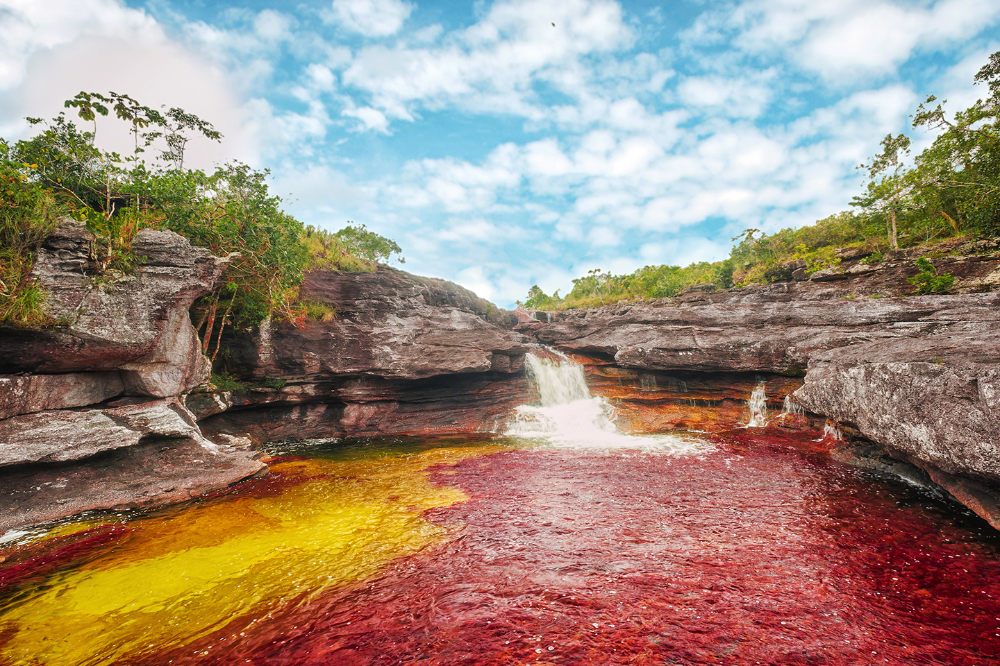
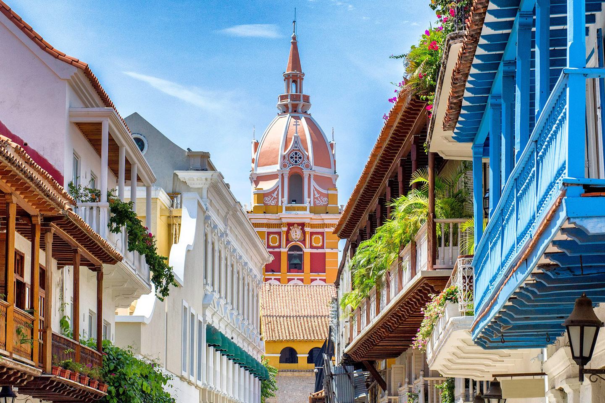
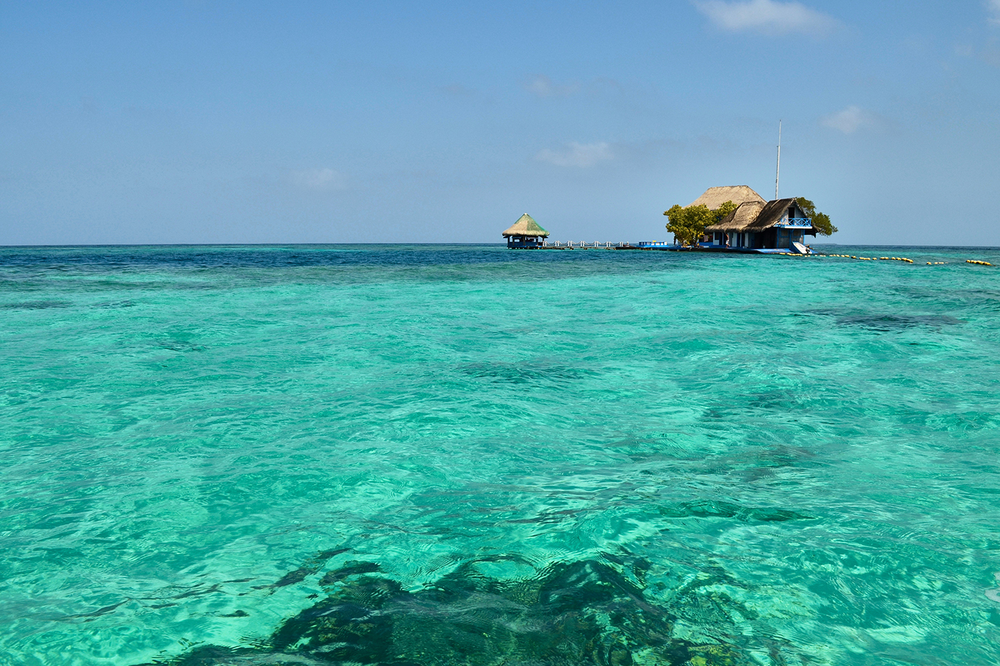
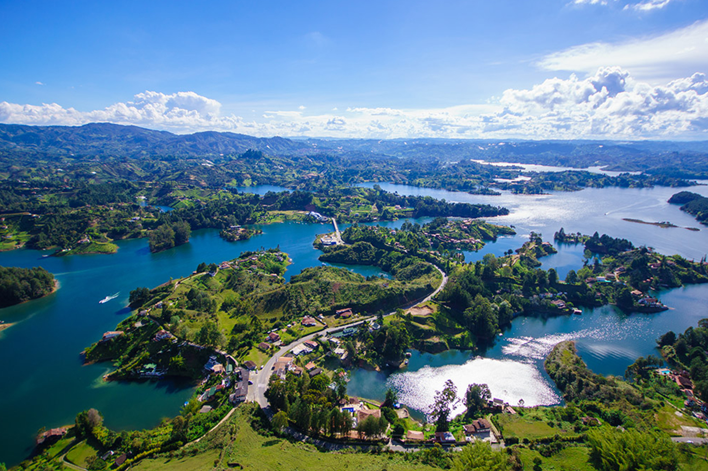

Colombia es un país suramericano de incontables bellezas naturales y atractivas ciudades y pueblos, donde se mezclan culturas indígenas, europeas, africanas y americanas.
Conozcamos mejor a la “tierra del café”, demos un vistazo por los lugares turísticos de Colombia.
A continuación veremos algunos de los destinos turísticos más interesantes que tenemos en nuestro país.
1. La Macarena
La Macarena es un municipio del departamento del Meta con acceso a Caño Cristales, el río más hermoso del mundo. La diversidad de colores en sus aguas y las formaciones rocosas que forman bellas cascadas, también le han hecho ser conocido como el “río de cinco colores” o “río arcoíris”.
Para conocer bien este cuerpo de agua se necesitan de 2 a 3 días de excursión con guías y estar bien protegido del sol y de los mosquitos. Los protectores solares y los repelentes, están prohibidos.
Lo mejor es hacer el viaje entre julio y diciembre para apreciar mejor todo el colorido de la naturaleza.
Otros atractivos turísticos:
- Ciudad de Piedra.
- La Laguna del Silencio.
- El Raudal de Angostura.
- Parque Nacional Natural Amacayacu.
- Parque Nacional Natural Cahuinarí Amazonas.
¿Cómo llegar?
Podrás llegar por tierra desde Villavicencio en carreteras estrechas y maltrechas en un recorrido de 17 horas. Llegarás en avión desde Bogotá, Medellín, Cali y Villavicencio.
2. Cartagena de Indias
Un Patrimonio de la Humanidad, una ciudad con vestigios históricos que son muestras de ataques pitaras de los que fue víctima.
Cartagena está a orillas del mar Caribe con varios lugares de estructuras coloniales, lo que le hace uno de los destinos turísticos Colombia.
Atractivos turísticos
En sus playas podrás bucear, practicar snorkel, windsurf o conocer la bahía en paseos en barcos.
Las murallas de Cartagena son un ícono de la ciudad cuya construcción duro casi 200 años, para protegerla de ataques piratas.
La Unesco reconoció como Patrimonio Cultural de la Humanidad al Conjunto Monumental de Cartagena, al Puerto y a Las Fortalezas, entre ellas, Las Murallas.
En el Barrio de Getsemaní verás la cultura de esta ciudad colombiana en calles angostas. Las casas son una reminiscencia de fachadas antiguas muy bien conservadas.
Conoce la Estatua de la India Catalina, la aborigen que fue clave para la liberación de Cartagena. Los españoles la raptaron pero esta aprendió el español de aquel entonces, que le sirvió para derrotar a la cultura calamarí y lograr la construcción de la ciudad.
Otros atractivos turísticos:
- Museo del Oro.
- Cerro de La Popa.
- La Torre del Reloj.
- Plaza de los Coches.
- Claustro San Agustín.
- Museo Naval del Caribe.
- Iglesia de Santo Domingo.
- Catedral Santa Catalina de Alejandría.
- Palacio de la Inquisición y Museo Histórico.
3. Península de Barú
Península de aguas cristalinas, palmeras y arenas blancas y rosadas, a 45 minutos de Cartagena de Indias, un lugar para disfrutar del mar todo el día, pese a que después de las 6:00 pm queda sin servicio eléctrico.
Atractivos turísticos
La Península de Barú es de los atractivos turísticos de Colombia para compartir en familia, pues cerca hay otros sitios con manglares, jardines submarinos y espejos de agua.
En cualquiera de sus playas podrás practicar snorkel, el Jet ski flysurfing, kayak, windsurf y el careteo; con este último verás la maravillosa variedad de flora y fauna marina.
En el Parque Nacional Natural Islas Corales verás raras pero espectaculares especies exóticas y en el Aviario Nacional de Colombia observarás una gran exhibición de aves verdes.
¿Cómo llegar?
Desde Cartagena de Indias tienes tres opciones. La más rápida es vía marítima, un trayecto de 45 minutos desde el Muelle de la Bodeguita directamente hasta la isla.
Vía terrestre y la más económica: toma un bus en Cartagena en el Monumento de la India Catalina hasta Pasacaballos, un recorrido de una hora. Luego toma una moto hasta la isla.
La tercera y última alternativa, pero también la más costosa, es tomar un taxi directo hasta la Península Barú.
4. Parque Nacional Natural Farallones de Cali

Zona protegida donde nacen alrededor de 30 ríos que llegan hasta el Valle del Cauca, con una gran cantidad de especies vegetales y animales en peligro de extinción.
La zona que comprende el parque es irregular en cuanto a la altura, porque va de los 200 m.s.n.m. hasta los 4100 m.s.n.m. Tiene áreas donde la temperatura puede ser de 5°C o de 25°C. Por tanto, debes llevar ropa que te proteja del frío, impermeables y zapatos cómodos y resistentes. Los protectores solares y los repelentes, no pueden faltar.
Atractivos turísticos
El Parque Nacional Natural Farallones de Cali tiene paisajes destacados por montañas, desde donde se disfruta de una fascinante vista de varias de las 700 especies de aves que habitan allí. También hay murciélagos, pumas, tigrillos y osos de anteojos.
Otros atractivos son su hermosa cascada de 130 metros de altura, quebradas y ríos, en los que podrás nadar.
Lleva comida y agua porque en el parque no hay locales de venta de alimentos.
¿Cómo llegar?
Puedes tomar un bus en el terminal de Cali que te lleve hasta un pueblo cercano al parque llamado, Pance. Dile al conductor que te avise cuando estén en el desvío de El Topacio, desde donde te tomará 15 minutos llegar a Pico de Loro, nombre de la entrada del parque al que debes llegar temprano pues solo se admiten 50 personas al día. Pasadas las 10:00 am el lugar queda restringido.
El trayecto a las formaciones rocosas debe iniciar entre las 6:00 am y las 10:00 am.
5. Guatapé
En el departamento de Antioquía y a dos horas de Medellín está un bello pueblo de calles empedradas y casas coloridas: Guatapé.
Las casas y murales públicos no solo tienen colores llamativos, también dibujos considerados obras de arte que junto al tejado y los balcones, le terminan de dar a esta localidad un toque colonial.
Otros atractivos turísticos
- Calle del Recuerdo.
- Plazoleta del Zócalo.
- Embalse Peñol-Guatapé.
- Malecón del Guatapé.
- Piedra del Peñol, monolito de más de 200 metros de altura.